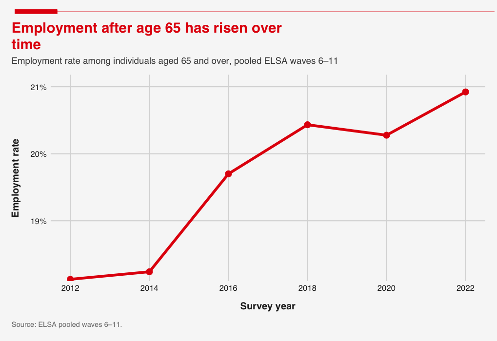
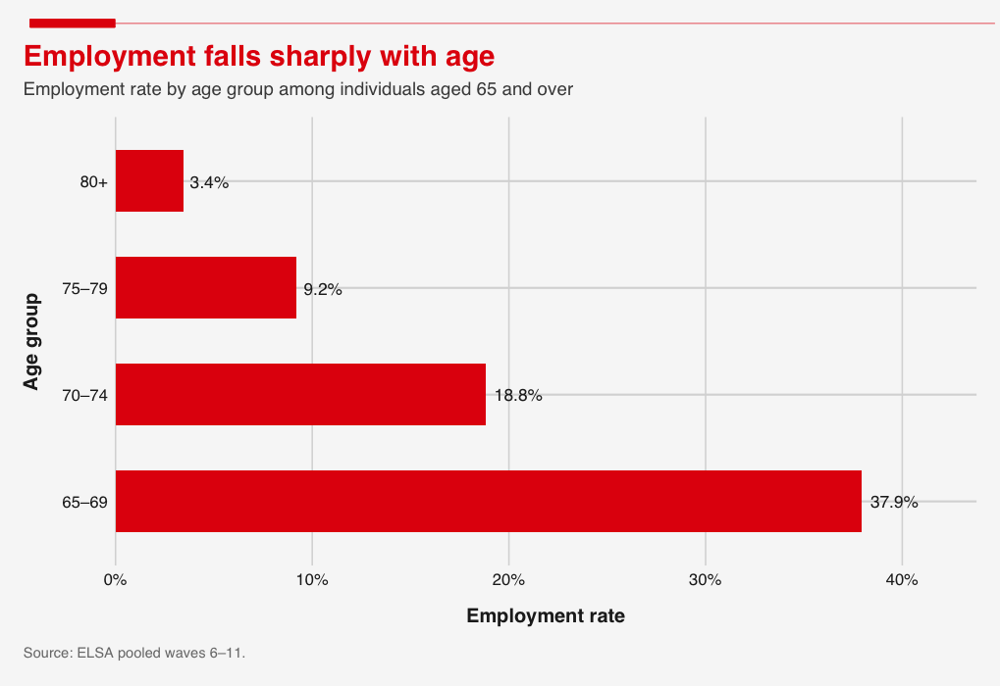
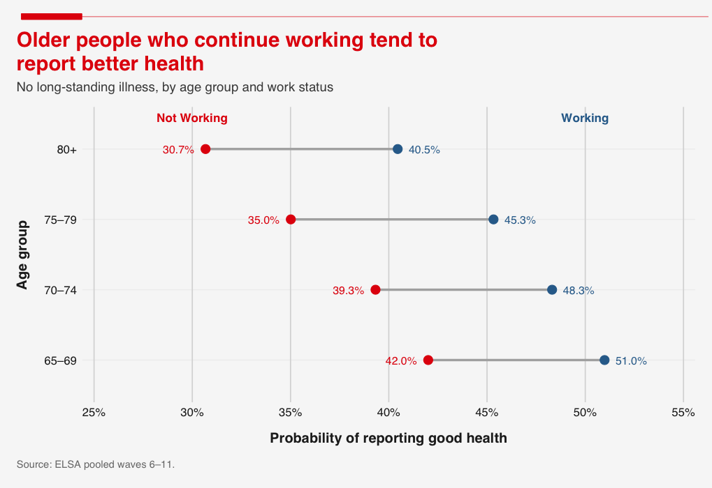
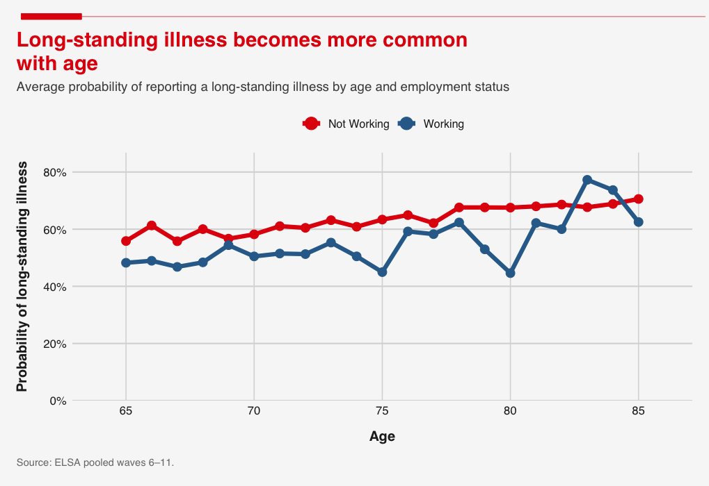
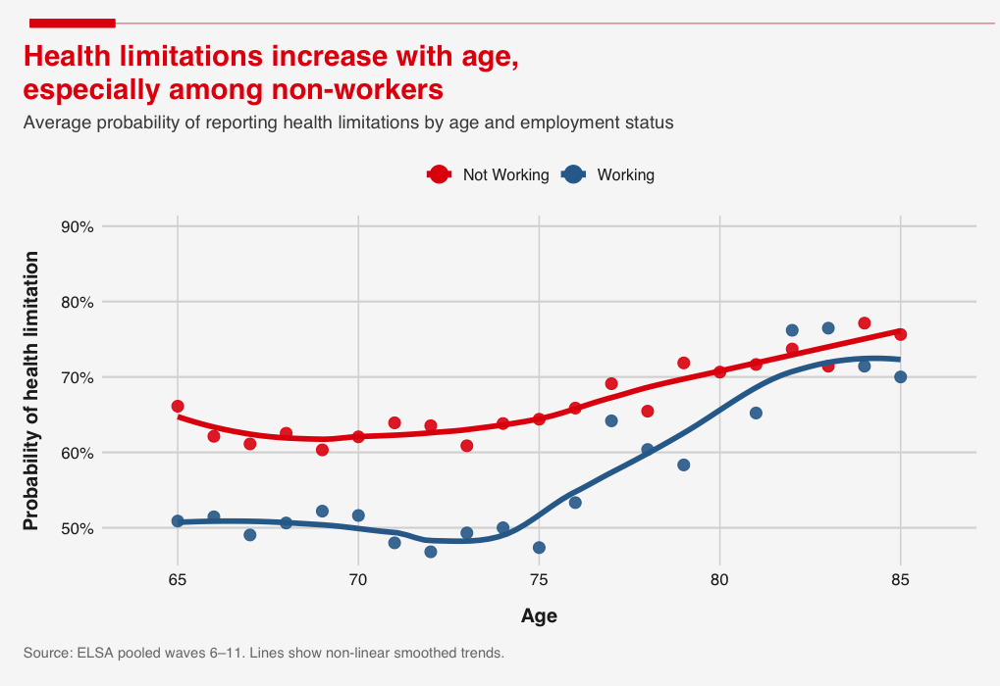
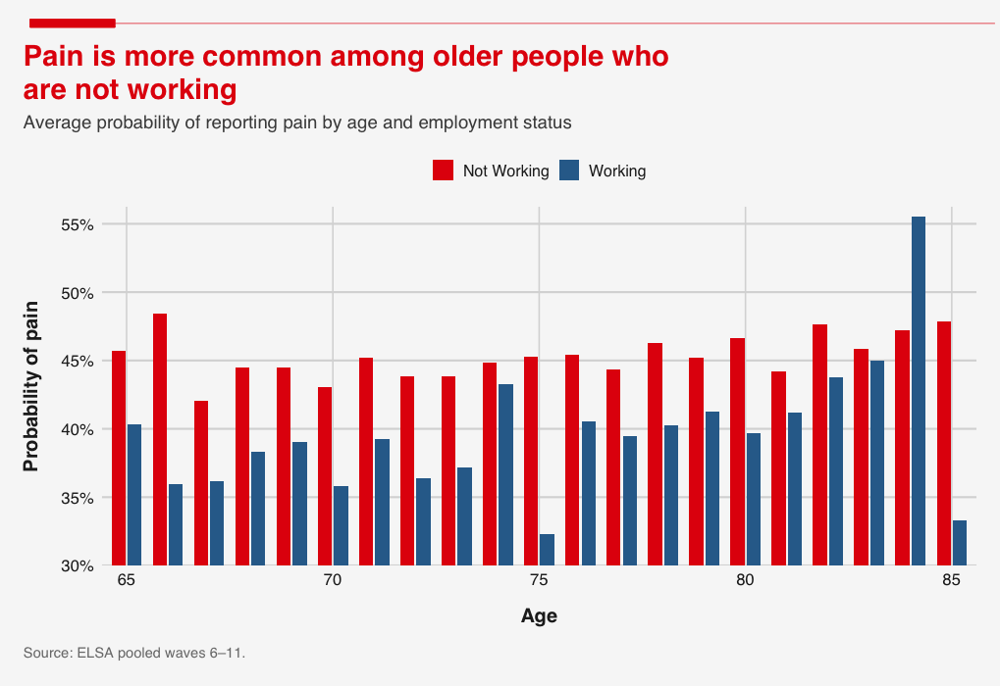

Should Older People Keep Working?
As the UK's population ages, more of the elderly are choosing—or being forced—to remain in the workforce. This shift is reshaping both the economy and the nature of retirement.
It is no secret that the UK has an ageing population. Data suggests over 19% of the population are over the age of 65 and this is projected to increase to 27% of the population by 2072 (Barton et al, 2024). This demographic shift has led to discussions about the implications of this on the health of the economy. Several headlines such as 'Ageing population will lead to lower living standards, warns study' (Financial Times, 2025) spark some concerns about this trend. One being the shrinking of the labour market as a broader base of the population go beyond the retirement age, however different policies can limit the negative effects of this trend, such as older retirement age and more women in the workforce (Bloom et al, 2010). This worry could also be mitigated by figure 1, which shows employment trends for those over 65.

This figure shows a substantial increase in the employment rate among older people. This started at around 18% in 2012 and has increased by around 3% within the last decade. There has been a notable spike since covid, possible reasons for this include financial pressures and staff shortages (Bullock, 2025). Figure 2 builds on this, showing how employment reduces with age post-65.

The employment rate is split into age groups here and this clearly declines with age. Over 1/3 of people aged 65–69 are in some form of employment and this cuts in half for the older age group. This trend falls dramatically for the over 80s age group. This suggests that some of the population are working until they pass, as the life expectancy in the UK is 82 (MacroTrends, 2025). As the population of the UK is ageing, it suggests the importance of work from within this age group. This is particularly important if the government is aiming to have 80% employment across the country, meaning the government should focus on getting older people into work (Centre for Ageing Better, 2025).
Another country that is notorious for having an ageing population is Japan, who have the second highest life expectancy in the world at 85 (MacroTrends, 2025) and 29.3% of the population is over 65. Studies have shown that putting these people to work may not just have economic benefits. Shimizutani & Oshio (2023) conducted a study to show the health-related impacts for working later in life. They show that there are mixed effects on health of older workers, which are generally negative in terms of physical health but positive for mental health. This indicates we need to consider a variety of factors if the retirement age was to be increased.
Due to Japan's ageing population, organisations such as Silver Jinzai have been set up to keep older workers in low skilled, low intensity employment. This organisation has over 700,000 people (Ryall, 2021) and as of 2022, over 40% of companies hired someone over 70 in Japan (World Economic Reform, 2023). Studies show that people work longer now for reasons including: increased life expectancy, jobs requiring less physical labour and increased education (Harvard Health Publishing, 2018). Not all see the benefits, as many younger workers see them as far less productive and having a negative impact on the office (Royle, 2026).
While there are mixed effects of encouraging older work in Japan to tackle the issue of an ageing population, it poses the question of what the impact would be in the UK. Would there be better health among older people? Does it impact the current workforce? Or is it vital for the health of a quarter of the population and the economy as a whole?
As Figure 1 shows, in 2022 approximately 1 in 5 people aged 65 and over in the UK were still working, and this share has been steadily increasing over time. The obvious question is why? Though the answer may not be as straightforward as it seems.
At a time when the real value of state pensions has been subject to sustained political debate and the cost of living continues to pressure household budgets, the most intuitive explanation is money (UK Parliament, 2023; Office for National Statistics, 2026). The financial buffer previous generations relied on is no longer a viable route for many of the retirement age workforce, and so staying in work is not merely a lifestyle choice, but a necessity.
Although this tells part of the story and sheds light on the reality much of the older labour force face, it is not the only explanation. Doblytė and Giosa (2024) combines several studies spanning multiple countries to provide evidence that the motivations for working after reaching retirement age are more expansive. They highlight three broader motivations for continuing to work: continuation of established routines and identity, fear of what retirement might bring and a reflective choice to keep contributing when work remains meaningful and dignified. Their research implies that working post-retirement age is not in all cases, a purely financial decision but instead can also reflect a reluctance to sacrifice the structure and fulfillment the workplace provides which retirement cannot easily replace.
"Working post-retirement age is not, in all cases, a purely financial decision."
Though these motivations for continuing to work offer an interesting insight into the thinking of the older labour force, an equally important distinction is why people may choose to retire. Studying male retirees in the US, Boaz and Muller (1990) demonstrate that work-limiting health issues are a genuine driver for retirement, rather than a reason given after the choice is made. They find that those who cite health reasons for retirement show notably higher mortality and healthcare usage in the two years following retirement suggesting that health acts as a genuine filter on who remains in work past 65: those we observe as still employed are, in part, those healthy enough to continue.
The ELSA has already shown that there are increasing numbers of labour force participation rates amongst those over 65+, and it naturally follows to consider how this might affect health and wellbeing outcomes. Those working beyond retirement age span across many different personal circumstances, one individual working for another year aged 66 in a highly specialised full-time job is in a very different circumstance to someone else aged 80 working once a week in a relatively unskilled industry. Yet we see one consistent trend across the data; those who continue working are healthier.

Figure 3 shows that if you continue to work you are more likely to report yourself as being healthy, there are 2 potential explanations for this. There's a psychological effect of working in older age, put simply if you are still able to engage effectively in a work place you will still think of yourself as healthy. As mentioned previously, there are broader benefits of working longer beyond financial incentives (Doblytė & Giosa, 2024). Engagement in work for these groups leads to better reported health as they receive continued social engagement after turning 65 (Harvard Health Publishing, 2018). Reflected in self-reported health of those still engaged in employment compared to those who aren't.
Beyond self-reported health, long-standing illness follows a similar trend. It's clear as to why long-term illness increases with age however those in work are much less likely to have a long-standing illness as shown by figure 4. This is in part because many long-term illnesses such as dementia will likely cause someone still in work to retire, but it's also likely that those in the workplace are at a lower risk of long-term mental and physical impairments.

Especially within the first 15 years of the post-retirement age, individuals in the ELSA saw consistently lower rates of long-standing illnesses if they were in employment. Clear health benefits are acknowledged by those working post 65. The logic is relatively simple, you keep actively participating in society through work and gain the benefits of greater health, this leads to greater personal control over later life too (Reynolds, Farrow and Blank, 2012), in the previously cited study the income benefits of working post 65 were acknowledged but not crucial.
Similar trends are seen when also concerning health limitations, which are classed as difficulties in instrumental daily activities (ESLA User Guide, 2024). This is more likely to be a different barrier to an individual living a good quality of life than long term illnesses, for example high blood pressure if managed well shouldn't limit a person's day-to-day life. Health limitations depending on the type can also go away because temporary ailments such as broken bones can be classed as such. Nonetheless the ELSA data shows similar trends for health limitations as long term illness probability.

Those who remained in employment had better quality of life in so far that they were less likely to have barriers in the way of living a normal life from health problems. Interestingly across 5 waves of surveying there's a downward trend of fewer respondents reporting health limitations after 65 initially while rising after 70. People that remained in work have a better quality of life it seems but both trend lines begin to converge together by age 85 you are almost equally likely to report a health limitation, working or retired. This may suggest that there are health benefits to working longer but similar to the likelihood of long-standing illness these benefits begin to converge around age 75, this implies that those working beyond retirement age realise the largest benefit of continued work for around a decade. There is a question over the extent to which retiring during this period increases the likelihood of a sudden health limitation, regardless as you get older you are more likely to have a health limitation, being in work or not. Outside of trend lines, Figures 4 and 5 also show more variance in responses, this may be a divergence within those in employment between those who must keep working for financial reasons and those who continue to work for social interaction and other benefits as outlined by Doblytė & Giosa (2024).
It is widely suggested that health problems increase the likelihood of retirement (Boaz and Muller, 1990) and these health problems manifest themselves across several ways. A simple and specific measure from respondents is feeling pain, we all know and have experienced pain and as figure 6 shows those who do experience pain are more likely to be not working, unlike illness and or health limitations there is less of a convergence between our 2 groups. So pain or lack thereof is, as a measure, a consistent and separate benefit of continued work, at least amongst trends. Once again we also see more variance among people in work and overall lower rates of pain compared to other measures, this may be due to the more subjective nature of it.

Figures 3–6 show a consistent point, those who remained in work consistently throughout aging have better health outcomes than those out of work, health understandably gets worse with age but the negative effects of aging may be mitigated through continued work beyond retirement age, the question at that point becomes what type of work best aids a longer and better quality of life.
As Figures 1 and 2 showed, more older people are working than ever before, and beyond this social trend, the economic consequences of this shift are equally significant. With the ever-growing population share of people aged 65 and over, the fiscal constraints of an ageing population cannot be underestimated (Barton et al., 2024). With this in mind, the benefits of a higher effective retirement age from increased contribution revenues with simultaneous reductions in pension expenditures may create a rare double benefit in public finance terms exactly when the UK needs it (Bielecki et al., 2016).
These benefits are not limited to tax and pensions alone. Figures 4 to 6 show workers aged 65 to 80 consistently report lower rates of long-standing illness, fewer health limitations and chronic pain. These differences are not purely about quality of life. Lower rates of illness and fewer health limitations among older workers may also mean reduced pressure on the NHS, so keeping people in work could itself help contain the healthcare costs that come with early retirement.
Despite the potential positives associated with an older active workforce, one main concern is whether older workers will crowd out younger ones. However, while this contention is intuitive, evidence from Gruber et al., (2010) suggests that this is not the case. By examining retirement policy reforms across multiple countries including the UK, they demonstrate that older and younger employment move together, reflecting broader economic conditions with no evidence to suggest that keeping older workers in the labour force reduces opportunities for the young.
Overall, the argument for extending working lives is strong, but it equally depends on workers being healthy enough both physically and financially to willingly and productively continue to work. For these reasons, any policy that pushes for a higher retirement age must wholly consider these factors and pressures to avoid turning a genuine opportunity into something more coercive.
The trends we have observed from the ELSA dataset, once situated in the wider academic discourse, can have important implications for policy makers. Hurd and McGarry (1995) highlight that those who expect to live longer (higher subjective survival probability, SSP, which is a strong predictor of actual mortality) are more likely to delay retirement, reinforcing that a degree of self-selection is involved in those who continue working. Interestingly, however, van Solinge and Henkens (2008) found that continued work enhances life expectancy for healthy retirement age individuals — there is a tangible benefit to these individuals even if they self-selected due to higher life expectancy in the first place. They suggest this is through work providing purpose, social networks, and cognitive engagement that boosts confidence in longevity. Zhan et al., (2009) find that individuals who transition into bridge employment (part-time, less demanding), especially in a job related to their prior career, show the highest SSP compared to those who stop working entirely or remain in full-time career jobs.
From our data analysis we have observed that working past 65 is associated with better health outcomes (diminishing past 75), and from the wider literature it is clear that there is a mix of selection and causation driving this trend. Understanding this nuance is how decision makers can make policy that alleviates the fiscal pressure of an aging population while also improving individual well-being and life expectancy. There should be an emphasis on facilitating good quality jobs for those who are able bodied and healthy enough to feel the benefits of later retirement. Perhaps a scheme of tax breaks for continued work past 65 with a program of matching those willing to good quality jobs could provide the right incentives to keep working, without punishing those unable to. Through keeping the right people employed for longer, the wider economic benefits discussed in section 4 can become a possibility.
Conclusion
As employment is increasing past the age of 65, we discuss the opportunities and challenges this presents in the face of an ageing population. Our ELSA dataset illustrated trends that associate later retirement with better health outcomes. This can have valuable implications for policy, but the underlying causes of these trends need to be considered. Work is traditionally seen as a financial benefit, however there is much more to this. Positive health implications, such as reduced likelihood of having pain or long term health limitations can significantly benefit those over 65 and the wider economy. Research suggests the type of employment strongly influences whether later retirement is beneficial to the individual; social, low intensity, part time, adjacent to previous career jobs are the best. The trends we illustrated display an opportunity, but a blanket rise in state pension age is the wrong idea, the benefits are partly selection bias. Policy should focus on keeping willing and able retirement age individuals working in good quality jobs. Fiscal implications are generally positive too, as more older people in work can reduce the strain on state pensions and welfare while keeping these people more active in the economy.
References
- Barton, C., Sturge, G. and Harker, R. (2024) The UK's changing population. House of Commons Library, 16 July. Available at: https://commonslibrary.parliament.uk/the-uks-changing-population/ (Accessed: 19 March 2026).
- Bielecki, M. et al. (2016) 'Decreasing fertility vs increasing longevity: Raising the retirement age in the context of ageing processes', Economic Modelling, 52, pp. 125–143. Available at: https://doi.org/10.1016/j.econmod.2015.02.020.
- Bloom, D.E., Canning, D. and Fink, G. (2010) 'Implications of population ageing for economic growth', Oxford Review of Economic Policy, 26(4), pp. 583–612. Available at: https://doi.org/10.1093/oxrep/grq038.
- Boaz, R.F. and Muller, C.F. (1990) 'The validity of health limitations as a reason for deciding to retire', Health Services Research, 25(2), p. 361.
- Bullock, C. (2025) 'Hospitality turns to baby boomers to ease staff shortage', Financial Times, online. Available at: https://www.ft.com/content/d05f5329-fae5-4ab4-a04c-fb12b3d3d64a (Accessed: 19 March 2026).
- Centre for Ageing Better (2025) Latest labour market stats show government needs to act to support older workers. Available at: https://ageing-better.org.uk/news/latest-labour-market-stats-show-government-needs (Accessed: 19 March 2026).
- Doblytė, S. and Giosa, R. (2024) 'Why people work past retirement age: The continuity of routines, future imaginaries, and practical evaluation', Journal of Occupational Science, 31(4), pp. 672–686. Available at: https://doi.org/10.1080/14427591.2024.2344476.
- Financial Times (2025) 'Ageing populations will lead to lower living standards, warns study', 24 November. Available at: https://www.ft.com/content/3a675f7f-ff46-4b8d-9744-08dfed18d23a (Accessed: 19 March 2026).
- Gruber, J., Milligan, K.S. and Wise, D.A. (2009) 'Social Security Programs and Retirement Around the World: The Relationship to Youth Employment, Introduction and Summary', NBER Working Paper Series, 14647. Available at: https://doi.org/10.3386/w14647.
- Harvard Health Publishing (2018) Working later in life can pay off in more than just income. Available at: https://www.health.harvard.edu/healthy-aging-and-longevity/working-later-in-life-can-pay-off-in-more-than-just-income (Accessed: 19 March 2026).
- Hurd, M.D. and McGarry, K. (1995) 'Evaluation of the Subjective Probabilities of Survival in the Health and Retirement Study', The Journal of Human Resources, 30, pp. S268–S292. Available at: https://doi.org/10.2307/146285.
- MacroTrends (2025) Japan life expectancy 1950–2025. Available at: https://www.macrotrends.net/global-metrics/countries/jpn/japan/life-expectancy (Accessed: 19 March 2026).
- MacroTrends (2025) U.K. life expectancy 1950–2025. Available at: https://www.macrotrends.net/global-metrics/countries/gbr/united-kingdom/life-expectancy (Accessed: 19 March 2026).
- National Centre for Social Research and English Longitudinal Study of Ageing (2025) User Guide to the Main Interview Datasets Waves 1 to 11. November. Available at: PDF link (Accessed: 19 March 2026).
- Office for National Statistics (2026) Consumer price inflation, UK: January 2026. Available at: https://www.ons.gov.uk/economy/inflationandpriceindices/bulletins/consumerpriceinflation/january2026 (Accessed: 19 March 2026).
- Parliament.uk (2023) Raising the State Pension Age to 68. Hansard, House of Commons, 1 February. Available at: https://hansard.parliament.uk/ (Accessed: 19 March 2026).
- Reynolds, F., Farrow, A. and Blank, A. (2012) '"Otherwise it would be nothing but cruises": Exploring the subjective benefits of working beyond 65', International Journal of Ageing and Later Life, 7(1). Available at: https://doi.org/10.3384/ijal.1652-8670.127179.
- Royle, O.R. (2026) 'Japanese companies are paying older workers to sit by a window and do nothing', Fortune. Available at: https://fortune.com/2026/02/27/... (Accessed: 19 March 2026).
- Ryall, J. (2021) 'How Japan keeps its elderly employed and active', Deutsche Welle. Available at: https://www.dw.com/en/how-japan-keeps-its-elderly-employed-and-active/a-59516633 (Accessed: 19 March 2026).
- Shimizutani, S. and Oshio, T. (2023) 'Will Working Longer Enhance the Health of Older Adults? A Pooled Analysis of Repeated Cross-sectional Data in Japan', Journal of Epidemiology, 33(1), pp. 15–22. Available at: https://doi.org/10.2188/jea.JE20210030.
- van Solinge, H. and Henkens, K. (2008) 'Adjustment to and satisfaction with retirement: Two of a kind?', Psychology and Aging, 23(2), pp. 422–434. Available at: https://doi.org/10.1037/0882-7974.23.2.422.
- World Economic Forum (2023) Japan faces a working-age labour shortage. Available at: https://www.weforum.org/stories/2023/08/japan-working-age-labour-shortage/ (Accessed: 19 March 2026).
- Zhan, Y. et al. (2009) 'Bridge employment and retirees' health: A longitudinal investigation', Journal of Occupational Health Psychology, 14(4), pp. 374–389. Available at: https://doi.org/10.1037/a0015285.
Image
- WHN Solicitors (no date) Workplace rights for older people. Available at: https://www.whnsolicitors.co.uk/newsroom/business/workplace-rights-older-people/ (Accessed: 19 March 2026).